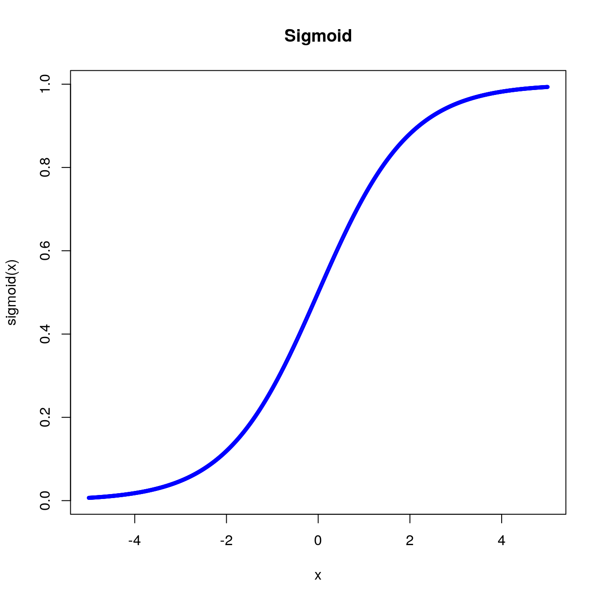
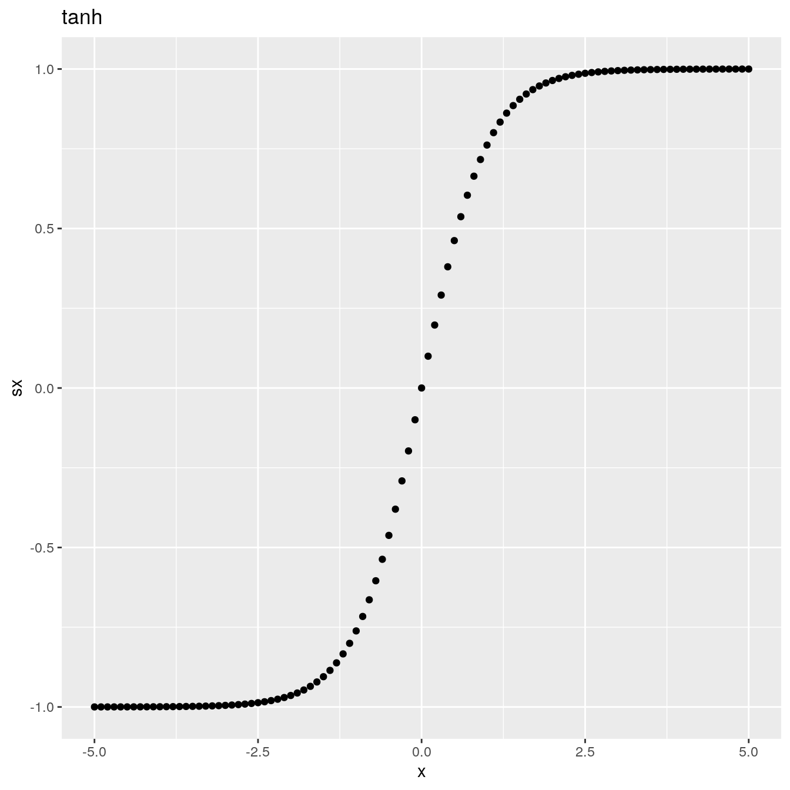
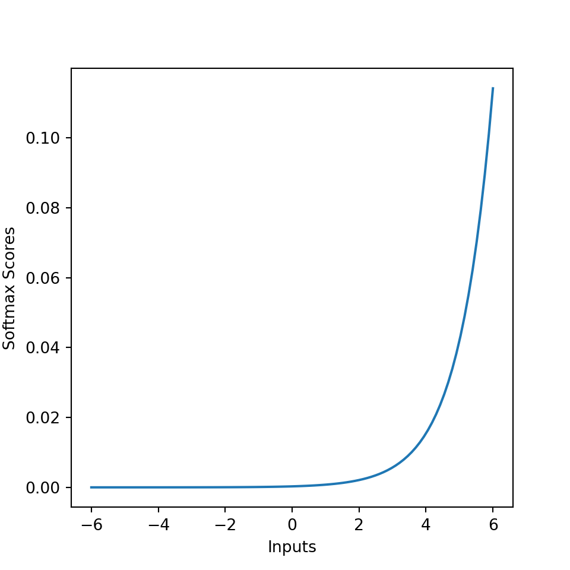

B Activation Functions
B.1 The Sigmoid function
Using the PyTorch sigmoid() function:
x <- torch$range(-5., 5., 0.1)
y <- torch$sigmoid(x)
df <- data.frame(x = x$numpy(), sx = y$numpy())
df
#> x sx
#> 1 -5.0 0.00669
#> 2 -4.9 0.00739
#> 3 -4.8 0.00816
#> 4 -4.7 0.00901
#> 5 -4.6 0.00995
#> 6 -4.5 0.01099
#> 7 -4.4 0.01213
#> 8 -4.3 0.01339
#> 9 -4.2 0.01477
#> 10 -4.1 0.01630
#> 11 -4.0 0.01799
#> 12 -3.9 0.01984
#> 13 -3.8 0.02188
#> 14 -3.7 0.02413
#> 15 -3.6 0.02660
#> 16 -3.5 0.02931
#> 17 -3.4 0.03230
#> 18 -3.3 0.03557
#> 19 -3.2 0.03917
#> 20 -3.1 0.04311
#> 21 -3.0 0.04743
#> 22 -2.9 0.05215
#> 23 -2.8 0.05732
#> 24 -2.7 0.06297
#> 25 -2.6 0.06914
#> 26 -2.5 0.07586
#> 27 -2.4 0.08317
#> 28 -2.3 0.09112
#> 29 -2.2 0.09975
#> 30 -2.1 0.10910
#> 31 -2.0 0.11920
#> 32 -1.9 0.13011
#> 33 -1.8 0.14185
#> 34 -1.7 0.15447
#> 35 -1.6 0.16798
#> 36 -1.5 0.18243
#> 37 -1.4 0.19782
#> 38 -1.3 0.21417
#> 39 -1.2 0.23148
#> 40 -1.1 0.24974
#> 41 -1.0 0.26894
#> 42 -0.9 0.28905
#> 43 -0.8 0.31003
#> 44 -0.7 0.33181
#> 45 -0.6 0.35434
#> 46 -0.5 0.37754
#> 47 -0.4 0.40131
#> 48 -0.3 0.42556
#> 49 -0.2 0.45017
#> 50 -0.1 0.47502
#> 51 0.0 0.50000
#> 52 0.1 0.52498
#> 53 0.2 0.54983
#> 54 0.3 0.57444
#> 55 0.4 0.59869
#> 56 0.5 0.62246
#> 57 0.6 0.64566
#> 58 0.7 0.66819
#> 59 0.8 0.68997
#> 60 0.9 0.71095
#> 61 1.0 0.73106
#> 62 1.1 0.75026
#> 63 1.2 0.76852
#> 64 1.3 0.78584
#> 65 1.4 0.80218
#> 66 1.5 0.81757
#> 67 1.6 0.83202
#> 68 1.7 0.84553
#> 69 1.8 0.85815
#> 70 1.9 0.86989
#> 71 2.0 0.88080
#> 72 2.1 0.89090
#> 73 2.2 0.90025
#> 74 2.3 0.90888
#> 75 2.4 0.91683
#> 76 2.5 0.92414
#> 77 2.6 0.93086
#> 78 2.7 0.93703
#> 79 2.8 0.94268
#> 80 2.9 0.94785
#> 81 3.0 0.95257
#> 82 3.1 0.95689
#> 83 3.2 0.96083
#> 84 3.3 0.96443
#> 85 3.4 0.96770
#> 86 3.5 0.97069
#> 87 3.6 0.97340
#> 88 3.7 0.97587
#> 89 3.8 0.97812
#> 90 3.9 0.98016
#> 91 4.0 0.98201
#> 92 4.1 0.98370
#> 93 4.2 0.98523
#> 94 4.3 0.98661
#> 95 4.4 0.98787
#> 96 4.5 0.98901
#> 97 4.6 0.99005
#> 98 4.7 0.99099
#> 99 4.8 0.99184
#> 100 4.9 0.99261
#> 101 5.0 0.99331
ggplot(df, aes(x = x, y = sx)) +
geom_point() +
ggtitle("Sigmoid")
Plot the sigmoid function using an R custom-made function:
sigmoid = function(x) {
1 / (1 + exp(-x))
}
x <- seq(-5, 5, 0.01)
plot(x, sigmoid(x), col = 'blue', cex = 0.5, main = "Sigmoid")
B.2 The ReLU function
Using the PyTorch relu() function:
x <- torch$range(-5., 5., 0.1)
y <- torch$relu(x)
df <- data.frame(x = x$numpy(), sx = y$numpy())
df
ggplot(df, aes(x = x, y = sx)) +
geom_point() +
ggtitle("ReLU")
B.3 The tanh function
Using the PyTorch tanh() function:
x <- torch$range(-5., 5., 0.1)
y <- torch$tanh(x)
df <- data.frame(x = x$numpy(), sx = y$numpy())
df
ggplot(df, aes(x = x, y = sx)) +
geom_point() +
ggtitle("tanh")
B.4 The Softmax Activation function
Using the PyTorch softmax() function:
x <- torch$range(-5.0, 5.0, 0.1)
y <- torch$softmax(x, dim=0L)
df <- data.frame(x = x$numpy(), sx = y$numpy())
ggplot(df, aes(x = x, y = sx)) +
geom_point() +
ggtitle("Softmax")
B.5 Coding your own activation functions in Python
Linear activation
def Linear(x, derivative=False):
"""
Computes the Linear activation function for array x
inputs:
x: array
derivative: if True, return the derivative else the forward pass
"""
if derivative: # Return derivative of the function at x
return np.ones_like(x)
else: # Return forward pass of the function at x
return xSigmoid activation
def Sigmoid(x, derivative=False):
"""
Computes the Sigmoid activation function for array x
inputs:
x: array
derivative: if True, return the derivative else the forward pass
"""
f = 1/(1+np.exp(-x))
if derivative: # Return derivative of the function at x
return f*(1-f)
else: # Return forward pass of the function at x
return fHyperbolic Tangent activation
def Tanh(x, derivative=False):
"""
Computes the Hyperbolic Tangent activation function for array x
inputs:
x: array
derivative: if True, return the derivative else the forward pass
"""
f = (np.exp(x)-np.exp(-x))/(np.exp(x)+np.exp(-x))
if derivative: # Return derivative of the function at x
return 1-f**2
else: # Return the forward pass of the function at x
return fRectifier linear unit (ReLU)
def ReLU(x, derivative=False):
"""
Computes the Rectifier Linear Unit activation function for array x
inputs:
x: array
derivative: if True, return the derivative else the forward pass
"""
if derivative: # Return derivative of the function at x
return (x>0).astype(int)
else: # Return forward pass of the function at x
return np.maximum(x, 0)Visualization with matplotlib
Plotting using matplotlib:
x = np.linspace(-6, 6, 100)
units = {
"Linear": lambda x: Linear(x),
"Sigmoid": lambda x: Sigmoid(x),
"ReLU": lambda x: ReLU(x),
"tanh": lambda x: Tanh(x)
}
plt.figure(figsize=(5, 5))
[plt.plot(x, unit(x), label=unit_name, lw=2)
for unit_name, unit in units.items()]
plt.legend(loc=2, fontsize=16)
plt.title('Activation functions', fontsize=20)
plt.ylim([-2, 5])
plt.xlim([-6, 6])
plt.show()
B.6 Softmax in Python
# Source: https://dataaspirant.com/2017/03/07/difference-between-softmax-function-and-sigmoid-function/
import numpy as np
import matplotlib.pyplot as plt
def softmax(inputs):
"""
Calculate the softmax for the give inputs (array)
:param inputs:
:return:
"""
return np.exp(inputs) / float(sum(np.exp(inputs)))
def line_graph(x, y, x_title, y_title):
"""
Draw line graph with x and y values
:param x:
:param y:
:param x_title:
:param y_title:
:return:
"""
plt.plot(x, y)
plt.xlabel(x_title)
plt.ylabel(y_title)
plt.show()
graph_x = np.linspace(-6, 6, 100)
graph_y = softmax(graph_x)
print("Graph X readings: {}".format(graph_x))
print("Graph Y readings: {}".format(graph_y))
line_graph(graph_x, graph_y, "Inputs", "Softmax Scores")